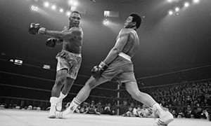
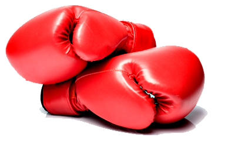
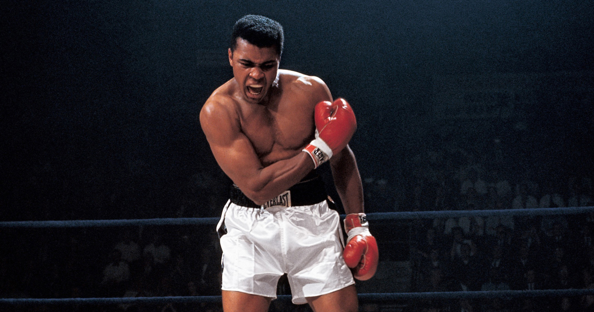

Over the years the man Muhammad Ali has inspired me to be a better athlete.
  here we see the great Ali slipping a punch that was agreesively thrown at him.
Muhammad Ali inspiresme for three main reasons.
Muhammad Ali was an amazing athlete who needed to maintain great shape and great physical condition so that he could out work all of his oppents.
I use his ways to motivate myslef when I am doing sports so that no one on the field will out work me.
Though Muhammads career,He was doubted constantly. He used this to work harder so that he could prove all whom hated him wrong.
I felt inspired by this and I try to use the same method he used in my life. Especially in races or something to do with running.
When someome doubts me or says negative things about my abilites before a running situation.
I use this as fuel and encouragement to prove them wrong just like Muhammad
Just like his habits and confidence,Muhammad was determind to be the best at hissport. No matter what or who tried to stop him.
Muhammad was the best and everyone knew that for a fact.